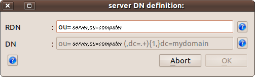
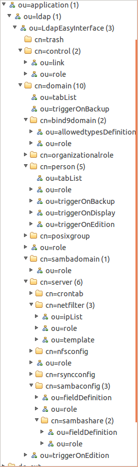

This object is implemented by the "
connectFrontend"
class.
It is called by all graphical interfaces (see menuBar : "
Action/Connect"),
both in interactive mode (as shown by
the above form), and
when connected automatically, in order of priority:
- when sending arguments from the command line, when starting interface,
- through the recall of any parameters stored by the operator during the last work session (checkbox "Save(d) parameters", file : ~/.frontends/"interface_name".xml),
- from shared memory (see IPC), initialized by the previous session of another interface already in use, under the same Unix login...
- interactive (new) connection.
The principle of an interactive connection is as follows:
- Click on button <Connect> : the form being filled, a first connection to the directory defined by the "Uri" field is performed in "anonymous" mode. If this connection is not possible (incorrect URI, insufficient rights ...), the procedure is aborted.
- Search the "DN" of the specified user : If it does not exist or that the information is ambiguous (ie: multiple instances found), the procedure is stopped. In case of an ambigious DN (several matches found), the operator can input the complet identifier "DN" (example: "cn=Manager, dc=mydomain") au instead of the simple login information (here: "Manager") ...
- Automatic reconnection with the identity of the specified user: he must have permissions set by the administrator of the directory. Particular, he must have at minimum read access to the tree configuration GUIs "LdapEasyInterface" (even, according to some profiles that will be granted, write access to some part of this tree). It must also have, of course, access to information managed through the interface...
- Verification of the existence of the tree setting for the calling GUI: otherwise, the object "connectFrontend" will try to create this setup tree; it is therefore appropriate in this case the user is actually logged on a database administrator, otherwise the user will be informed of the lack of necessary rights to such initialization and will be disconnected. However, if this check is correct and that the object "connectFrontend" finds what he needs, the program will continue to step 9 described below. If there is need to set some setting information missing, the program will continue to Step 5 next.
- Creation of the tree setting the Admin GUI:
Failing a complete existing parameterization, a dialog window will then
appear, preceded by his "online help" explaining what is expected from
the operator. Initially, it may be asked to locate the root of the tree parameter common to all management interfaces (for example, it could be "ou=LdapEasyInterface,ou=ldap,ou=application,dc=mydomain"). If this entry is not completed, the user will be disconnected because no operation of any GUI administration will be in this case possible.
- Verification of application roles available to the user: If successful from Step 5 above, it can be said to the operator that a role is not yet defined in the current directory for the interface in use. Two solutions exist:
- either the current interface is precisely that which allows the definition of roles (in this case, the operator can complete the definition, as of course he has sufficient permissions),
- either he will be informed he can find a template in menu "help" of the current interface. This tempate (format LDIFF) applies only to specific roles to the application running; it will be necessary to repeat the same operation for each of interfaces subject to a role management for its use; the proposed content "LDIFF" may be copied with the mouse and paste into a text file and possibly modified to be adapted and applied to the local database directory (see ldapadd - this is one of the reasons why this task should preferably be conducted by the database administrator...).
- Checking the definition domain "Trash": If this hasn't been done before, the object "connectFrontend" will ask the operator to locate the trash in the directory database. This will be a domain name ("dc=..." ; eg "dc=_deleted,dc=mydomain")
dans lequel where will be located all the next logical deletions of the directory (through removal capabilities GUI administration "LdapEasyAdmin").
This specific domain (trash) should also be created by the administrator (eg, throught the GUI "domainFrontend" ;-), otherwise, the
profile "permission deletions" if granted to the current user will be temporarily unavailable...
- Checking definition of the location of objects managed by the interface: In this step, if necessary, some additional information will be requested from the operator, namely: the location of the tree storage,
the name of the storage attribute of the identifier of the object
managed by the current interface... Some help online guide the operator
by providing default values...
- Choice of connection profile: The user is identified and the interface setting checked, it remains to define the profile (and its associated roles) he will have during the next work session. If no profile is found by the object "connectFrontend" in the directory database for the user requesting the connection, the procedure will stop there and the user will be ejected from the application. However, if a profile exists, the connection procedure will be effective. If multiple profiles exist (case of "multiple roles" assigned to the same person), then the list of profiles found will be displayed (with info-bulles/tooltips description) in the lower part of the connection form.
It will remain to the operator to select a connection profiles that are
proposed, according to the work he wants to do and the delivery profile
required for this...
- End of the procedure for connection to the directory: Once the selection is validated (double click or button <Selected
profile>), the form of connection is closed, the connection to the directory is effective, the Admin GUI has now the control with the management capabilities defined for the connection profile selected.
The effective access for the user connected now corresponds to the
profils, the
roles
and the areas that have previously been authorized by the directory administrator for the login of this user...
At any time, the user can return to this form of connection to change the connection profile, or possibly to reconnect with a different login account ...
A few notes:
- about the profiles management:
- The use of multiple profiles is not mandatory. Only one profile can be defined by user and group together all application roles assigned to a given user, that for all (or no) management interfaces. How to manage these roles will remain at the initiative of the administrator in charge of this task...
- the "Uri" attribute is imperative (of course: except for consultation) set a reference directory (writable), and not one of its possible replication in the case of a replicated directory architecture and/or deported!... ;-)
- the permissions assigned to each network domain are valid for the entire tree under the domain (or subdomain); so they are also automatically inherited in sub-areas defined under this root (ie. from the parent domain)...
- about the step 4 :
When this is the first time a GUI calling this form of connection ("
connectForm")
is initiated, no setting is still defined on the new GUI in the directory. Thus, the connection form "connectForm" will detect the lack of parameterization and will initiate, if necessary, the automatic call to the screen mask below which will enable the directory administrator to create the absent parameterization.
If in addition, it is a first launch among all the interfaces LdapEasyInterface, the object "
connectForm" will previously call
two other additional forms to allow to define: on one hand, the location of the
"
trash"
and on the other hand,
the location of the root for all the parameterization of the suite "LdapEasyInterface"...
Here is an overview of the input mask to define the parameters specific to each of the GUIs:

- the field "rdn" allow to locate the storage rdn for managed objects by the current graphical interface graphique (here, "server" objects),
- the field "dn" is only a display field of the resulting "dn" according the value of the previous "rdn" attribute. On the screenshot above, it indicates that any server, defined in the directory "dc=mydomain", will be physically stored within its subdomain of belonging, in a subdirectory name (chosen by the administrator): "ou=server,ou=computer".
However,
some default parameter values are available, either on specific help
on each field (ToolButton), either with pre-valued fields.
An example of a configuration tree obtained:

Here is a
sample (format "LDIFF") of parameterization obtained...
The last sources version (
20110921) are
here.
This class can be compiled as a static or dynamic library, like the LDAP API C++: "
ldapcppei".
Since version 1.0 (July 2010), a version manager allows automatic control of consistency on every launch of the interfaces.